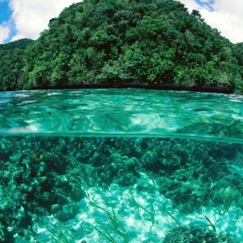

Какой-то загаловок о Сочи

Какой-то текст о Сочи
Сочи - город на юге России в Краснодарском крае, расположенный на побережье Чёрного моря. Это самый оживлённый морской курорт страны и столица Зимней Олимпиады 2014 года. Сочи именуют курортной или летней столицей России, а также «черноморской жемчужиной». Это колоритный южный город, который славится протяжённой береговой линией и замечательными пляжами, тёплым и чистым морем, вкусной кухней и живописной природой.
А сейчас не о Сочи а о океане
Какой-то текст о Океане
Океан (Мировой океан) — водная оболочка, покрывающая большую часть земной поверхности (четыре пятых в Южном полушарии и более трех пятых – в Северном). Лишь местами земная кора вздымается над поверхностью океана, образуя континенты, острова, атоллы и т. д. Хотя Мировой океан представляет собой единое целое, для удобства исследования отдельным его частям присвоены различные названия: Тихий, Атлантический, Индийский и Северный Ледовитый океаны.